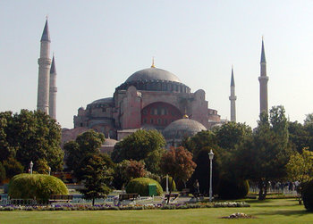

Medieval
Medieval Christianity
The Medieval Christianity was located all over Europe. As seen in figure 1, the map of the middle ages is similar to the map of Europe today. The Holy Roman Empire is today’s Germany, Switzerland, Austria, Czech Republic, Italy and part of Poland.
The Roman empire fell in 476 AD, after multiple emperors were assassinated, attacks from German tribes, plagues, lack of religion, and government power. The government of Rome had been controlled by multiple emperors, who had their own armies and separate control of part of Rome. These emperors wanted full control of Rome, so they assassinated each other which led to their government being destroyed. When there is no government structure or division within a country, that country is very susceptible to being destroyed. Medieval times begins after the fall of the Roman Empire and ends when the Renaissance begins. Thus, the Medieval period is 500 AD – 1500 AD.
Christianity became the state religion of Rome in 380 AD declared by Theodosius, who was a Roman Emperor from 379-395 AD. There were three important members of the Christian church during its early years. These people were Paul, Peter, and Augustine. Paul was one of Christ 12 apostles, he was a missionary for the church. Peter was also an apostle, and he was considered the rock or pope of the church. Augustine was a Christian philosopher who disagreed with the beliefs of the Roman empire.
The symbols of Christianity include the cross and the IXTHYS. There were two types of crosses, the Latin and the Greek. The Latin cross is the cross we see today, whereas the Greek cross is like a plus sign. The Latin cross is a floor plan that has been used in many churches, such as the Chartres Cathedral, also known as Norte Dome de Chartres. In Rome the cross represented crime. The IXTHYS stands for Iesous Christos, Theou, Yios, Soter. Translated means Jesus Christ, Son of God, Savior. The symbol represents two arcs coming together and it extends at one end to look like a fish. The fish represents the fish that Christ fed to 5,000 people and being baptized by water.
My major, Computer Science is not directly associated with Medieval Christianity, however my major is about problem solving, design, and organization. Without those characteristics’ computer science would not exist. You cannot program or build computers without utilizing problem solving, design, and organization. At the end of the Roman Empire, they did not have any of those characteristics and they stopped functioning, comparably to software built without problem solving, design, or organization would.
Byzantine Empire
The Byzantine Empire was the Eastern Roman Empire in 330 AD – 1453 AD. The empire had the longest reigning period. The capital was first named Byzantium, then changed to Constantinople under Emperor Constantine’s rule in 306-337 AD. From 284-305 AD, Emperor Diocletian split the Roman Empire into two parts to be ruled by separate emperors. He did this because the Roman Empire had gotten too large to be ruled by one person. The East side was ruled by him, while the west was ruled by Maximian and Constantius. Constantine was the son of Constantius. He took back both sides of the empire and ruled them as one. He then changed the name of the capital to Constantinople. Which served as trading port for Europe and Asia.
It is located between the Black and Mediterranean Sea.
Islam
Islam, also known as Muslim, is a religion that originated in Saudi Arabia. The word Islam means submission or obedience. This implies that they fulling accept God and their prophet Muhammed. Today Islam is the second largest religion in the world. Like Christianity, Islam’s also believe in the prophet Abraham, but they also believe in the prophet Muhammad. He lived from 570-632 AD. The Islam religion spread as the Islamic Empire spread. After Muhammad died, the caliphate type of government was formed where a caliph is the ruler of Islam. A caliph is a ruler who rules after Muhammad. The Rashidun caliphate expanded the Islamic borders by conquering nearby countries or empires, one of these empires was the Byzantine Empire. They ruled from 632-661 AD. They had expanded their borders, but their culture had not yet expanded with it. It wasn’t until after the Umayyad and Abbasid caliphates that their culture had been adopted in other places besides Saudi Arabia.
Artwork
Good Shepherd:
The Good Shepherd is located on the ceiling of the Catacomb of Saint Peter in Rome, Italy. It was made in the early 4th century during the early time of Christianity. The center circle shows Christ as a good Shepheard. There are also images of Jonah on the left and bottom half circle. The left one shows Jonah falling into the sea, and the bottom one shows Jonah laying down, possibly inside the whale because of the blue thing he is laying on.
Sarcophagus of Junius Bassus:
The Sarcophagus of Junius Bassus is an early Christian artwork that was made in 359 AD. It was located on the tomb of Junius Bassus. The sculptures show stories from the bible. The top middle one is of Christ sitting on a thrown with his feet on the sky god. This is there to show that Christ is above the gods rule or to show Christianity as the superior religion.
Hagia Sophia:
The Hagia Sophia is a Christian church located in Constantinople. It was built around 532-537 AD during the Byzantine Empire. The structure of the church is a dome with two half circles on either side of the dome. Inside, the art is made out of Mosaic and marble.
Justinian and Theodora and Attendants:
The Justinian and Theodora and Attendants is located in Ravenna, Italy. It was made in 547 AD during the Byzantine Empire.
Dome of the Rock:
The Dome of the Rock is an Islamic shrine in Jerusalem. It was built during the rule of the Umayyad caliph in the 7th century. The shrine was one of the first public places of worship for the Islam religion.
Church of Saint-Sernin:
The Church of Saint-Sernin is a Romanesque artwork located in Toulouse, France. It was made in 1080-1120 AD. It is a Catholic church that was also a political center for city of Toulouse.
Last Judgment Tympanum:
The Last Judgment Tympanum is in the Cathedral of St. Lazure in Autun, France. It is a Romanesque artwork, and above the doorway on the west façade of the Cathedral. It was made in 1135 by Gislebertus, who was a French sculptor in Autun, France. The sculpture depicts heaven and hell with Christ in the center with a mandoral around him. On the left of Christ there is a sculpture of Marry. The lintel shows people that are going to hell and heaven. There is also writings about the terror of hell on the right above the lintel.
Notre Dame Cathedral:
The Notre Dame Cathedral is a gothic style structure made in 1194 AD. It is located in Chartres, France. The three archways at the entrance are Portals. The portals are named Christ before incarnation and birth, end of time, and birth of Christ and presentation of the temple. The tunic that Mary wore when she gave birth to Christ is in the Cathedral on display. The Cathedral has a rose window, which is a window in the shape of a circle and broken up into shapes to resemble a flower. The window is made of red, blue, and yellow stained glass.
Sainte-Chapelle:
The Sainte-Chapelle is a Chapel in Paris, France. The Chapel was King Louis the 9th’s. It was built in the years 1238-1248 AD and was the Gothic style. The lower level of the Chapel was used by the Kings servants. The upper level was used by the King, Queen, and court. Three fourths of the Chapel is made of glass.
Salisbury Cathedral:
The Salisbury Cathedral is also known as the Church of the Blessed Virgin Mary is a gothic structure. It was built in the years 1220-1258 AD. It is located in Salisbury, England. It contains rare Purbeck marble, which is a dark limestone. The columns inside the cathedral are made of this Purbeck marble. The columns in the interior are ribbed, which looks like multiple columns placed right next to each other.
Cimabue – Madonna Enthroned:
The Madonna Enthroned done by Cimabue is a Gothic style artwork that shows Mary sitting on a throne holding baby Jesus. It also shows angels and prophets around Mary and baby Jesus. The painting was made in 1280 AD and is 385x233 cm (151.5x91.7 in). The paintings frame is gold. The shape of the frame is a rectangle with a triangle pointed top.
Giotto – Madonna Enthroned :
The Madonna Enthroned done by Giotto also shows Mary sitting on a throne holding baby Jesus. The figures in the background are different that the ones in Cimabue’s painting. The figures in Giotto’s painting are two angles at Mary’s feet and prophets and the wisemen to the side of them. It is also in a gold rectangle with triangle top frame.